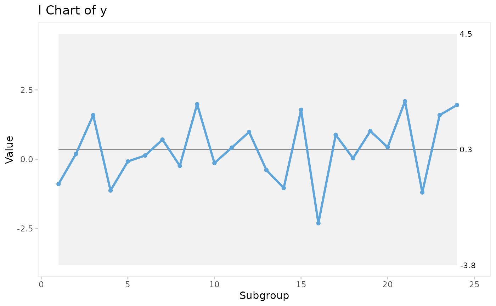
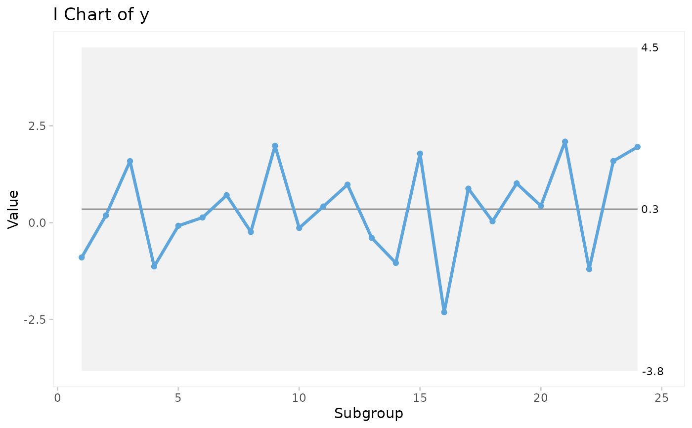

The qic() function creates run charts and Shewhart control charts for
process control and improvement. Included control charts are: I, MR, Xbar, S,
T, C, U, U', P, P', and G charts.
Usage
qic(
x,
y = NULL,
n = NULL,
data = NULL,
facets = NULL,
notes = NULL,
chart = c("run", "i", "mr", "xbar", "s", "t", "p", "pp", "c", "u", "up", "g", "ip"),
agg.fun = c("mean", "median", "sum", "sd"),
method = c("anhoej", "bestbox", "cutbox"),
multiply = 1,
freeze = NULL,
part = NULL,
exclude = NULL,
target = NA * 1,
cl = NA * 1,
nrow = NULL,
ncol = NULL,
scales = "fixed",
title = "",
ylab = "Value",
xlab = "Subgroup",
subtitle = NULL,
caption = NULL,
part.labels = NULL,
show.labels = is.null(facets),
show.95 = FALSE,
decimals = 1,
point.size = 1.5,
x.period = NULL,
x.format = NULL,
x.angle = NULL,
x.pad = 1,
y.expand = NULL,
y.neg = TRUE,
y.percent = FALSE,
y.percent.accuracy = NULL,
show.grid = FALSE,
flip = FALSE,
strip.horizontal = FALSE,
print.summary = FALSE,
return.data = FALSE
)Arguments
- x
Vector of subgroup values to plot along the x axis.
- y
Vector of measures or counts to plot on the y axis (numerator).
- n
Vector of subgroup sizes (denominator).
- data
Data frame containing variables used in the plot.
- facets
One or two sided formula with factors used for facetting plots.
- notes
Character vector of notes to be added to individual data points.
- chart
Character value indicating the chart type. Possible values are: 'run' (default), 'i', 'ip', 'mr', 'xbar', 't', 's', 'c', 'u', 'up', 'p', 'pp', and 'g'.
- agg.fun
Aggregate function for summarising the y variable if there are more than one observation per subgroup. Only relevant for run charts and I charts. Possible values are: 'mean' (default), 'median', 'sum', and 'sd'.
- method
Character indicating the method used for runs analysis. One of 'anhoej' (default), 'bestbox', and 'cutbox'. EXPERIMENTAL!
- multiply
Number indicating a number to multiply y axis by, e.g. 100 for percents rather than proportions. See also
y.percentargument.- freeze
Integer indicating the last data point to include in calculation of baseline parameters for centre and control lines. Ignored if part argument is given.
- part
Either integer vector indicating data points before recalculation of centre and control lines or character vector indicating chart parts.
- exclude
Integer vector indicating data points to exclude from calculations of centre and control lines.
- target
Numeric, either a single value indicating a target value to be plotted as a horizontal line or a vector for variable target line.
- cl
Numeric, either a single value indicating the centre line if known in advance or a vector for variable centre line.
- nrow, ncol
Number indicating the preferred number of rows and columns in facets.
- scales
Character string, one of 'fixed' (default), 'free_y', 'free_x', or 'free' indicating whether y and x axis scales should be the same for all panels or free.
- title
Character string specifying the title of the plot.
- ylab
Character string specifying the y axis label.
- xlab
Character string specifying the x axis label.
- subtitle
Character string specifying the subtitle.
- caption
Character string specifying the caption.
- part.labels
Character vector specifying labels for chart parts created with the freeze or part argument.
- show.labels
Logical indicating whether to show labels for centre and control lines on chart. Defaults to TRUE when facets argument is NULL.
- show.95
Logical indicating whether to show 95 control limits on chart. Defaults to FALSE.
- decimals
Integer indicating the preferred number of decimals in centre and control line labels.
- point.size
Number specifying the size of data points.
- x.period
Character string specifying the interval cut points of datetime x values used for aggregating y values by week, month, etc. See the breaks argument of
?cut.POSIXt()for possible values.- x.format
Date format of x axis labels. See
?strftime()for possible date formats.- x.angle
Number indicating the angle of x axis labels.
- x.pad
Number indicating expansion of x axis to make room for axis labels.
- y.expand
Numeric value to include in y axis. Useful e.g. for starting the y axis at zero.
- y.neg
If TRUE (default), the y axis is allowed to be negative (only relevant for I and Xbar charts).
- y.percent
If TRUE, formats y axis labels as percentages.
- y.percent.accuracy
A number to round percentage labels on y axis. Use 1 to show no decimals, 0.1 to show 1 decimal etc.
- show.grid
If TRUE, shows grid.
- flip
If TRUE, rotates the plot 90 degrees.
- strip.horizontal
If TRUE, makes y strip horizontal.
- print.summary
If TRUE, prints summary.
- return.data
If TRUE, returns underlying data frame.
Details
Non-random variation in the form of minor to moderate persistent shifts in data over time is (by default) identified by the Anhoej rules for unusually long runs and unusually few crossing. Use the EXPERIMENTAL method argument to apply the bestbox or cutbox methods as described in Anhøj & Wentzel-Larsen (2020) doi:10.1371/journal.pone.0233920 .
Special cause variation in the form of larger, possibly transient, shifts in data is identified by Shewhart's 3-sigma rule (Mohammed, Worthington, Woodall (2008) doi:10.1136/qshc.2004.012047 ).
Examples
# Lock random number generator to make reproducible results.
set.seed(2)
# Generate vector of 24 random normal numbers
y <- rnorm(24)
# Run chart
qic(y)
 # I control chart
qic(y, chart = 'i')

# U control chart from build-in data set of hospital infection rates faceted
# by hospital and type of infection.
qic(month, n,
n = days,
data = hospital_infections,
facets = infection ~ hospital,
chart = 'u',
multiply = 10000,
title = 'Hospital infection rates',
ylab = 'Number of infections per 10.000 risk days',
xlab = 'Month')
# I control chart
qic(y, chart = 'i')

# U control chart from build-in data set of hospital infection rates faceted
# by hospital and type of infection.
qic(month, n,
n = days,
data = hospital_infections,
facets = infection ~ hospital,
chart = 'u',
multiply = 10000,
title = 'Hospital infection rates',
ylab = 'Number of infections per 10.000 risk days',
xlab = 'Month')